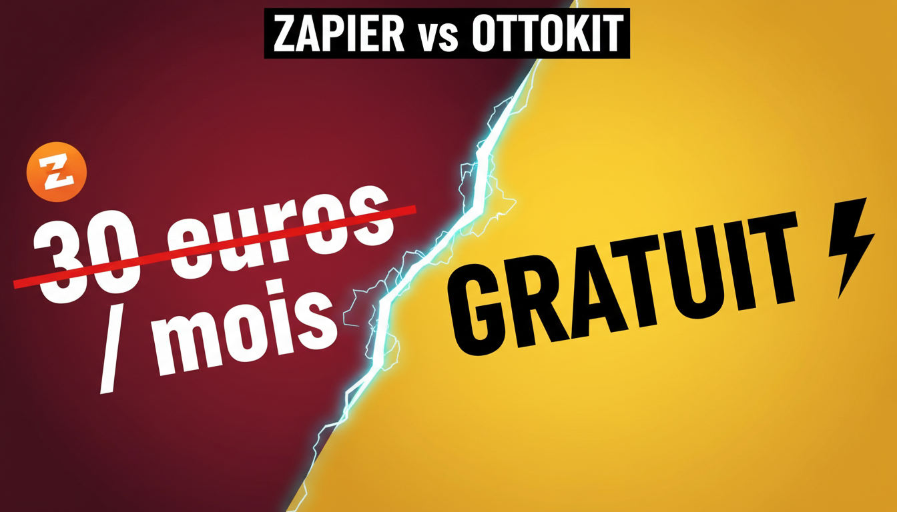
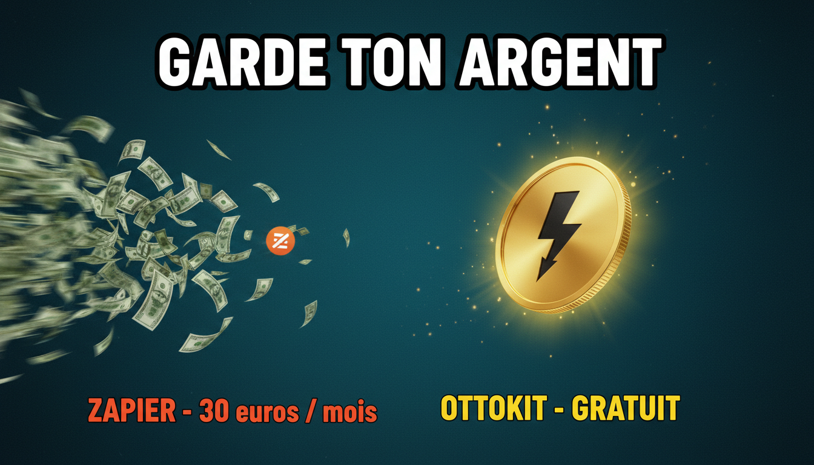
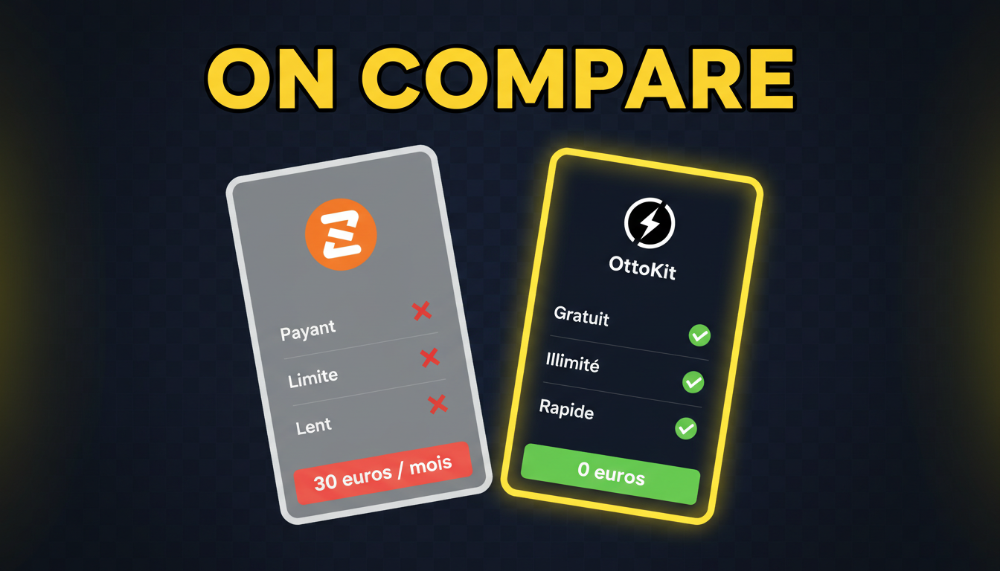

OttoKit - concept #02 "Gratuit vs Zapier" - 3 variations
Modele gemini-2.5-flash-image, 16:9 natif. Genere le 2026-04-16 23:01.

02-zapier-v1-typo-frontale Typo frontale, split diagonal YouTube thumbnail, 16:9 aspect ratio. Extreme typography focus. Full-frame split diagonally at -20 degrees angle. LEFT side (dark red gradient background): huge crossed-out price '30 euros / mois' in heavy white bold sans-serif font with thick red strikethrough line across it, small orange Zapier-style circular mark in the top corner. RIGHT side (bright yellow gradient background): single huge word 'GRATUIT' in massive black ultra-bold sans-serif font, with a bold black lightning-bolt icon next to it representing OttoKit. Between the two halves, a jagged neon-cyan tear/crack effect adds drama. Headline overlay at top center in white with thick black outline: 'ZAPIER vs OTTOKIT'. Extreme contrast, clickbait aesthetic, premium finish, no humans, no photos, text perfectly legible.

02-zapier-v2-metaphore-argent Métaphore billets qui s'envolent YouTube thumbnail, 16:9 aspect ratio. Dark teal gradient background with subtle grain. LEFT SIDE: exploding pile of green dollar bills and euro notes blowing away to the left with motion blur trails, a small orange Zapier-style circular logo mark fading and tumbling with the bills. Red subtitle below: 'ZAPIER - 30 euros / mois'. RIGHT SIDE: a floating clean gold coin with a black lightning-bolt OttoKit icon on top, glowing bright yellow halo around it, subtle floating sparkles. Yellow subtitle below in bold: 'OTTOKIT - GRATUIT'. Big overlay headline centered at top, white bold with thick black outline: 'GARDE TON ARGENT'. Financial magazine meets cinematic premium aesthetic, dramatic side-lighting, no humans, crisp typography perfectly legible.

02-zapier-v3-comparatif-cartes Comparatif produit 2 cartes YouTube thumbnail, 16:9 aspect ratio. Minimalist premium dark navy background with a very subtle grid pattern. Two product comparison cards side by side. LEFT CARD (greyed out, semi-transparent, tilted slightly backwards): orange Zapier-style circular logo at top, three line items below each with a red X mark - 'Payant', 'Limite', 'Lent'. Red price banner at the bottom: '30 euros / mois'. RIGHT CARD (vibrant, glowing bright yellow thick border, slightly larger and forward): black lightning-bolt OttoKit logo at top, three line items below each with a bright green check mark - 'Gratuit', 'Illimite', 'Rapide'. Green price banner at the bottom: '0 euros'. Huge top headline in yellow bold sans-serif with black outline: 'ON COMPARE'. Modern SaaS landing-page aesthetic with cinematic rim lighting, no humans, crisp sharp typography, all text perfectly legible.